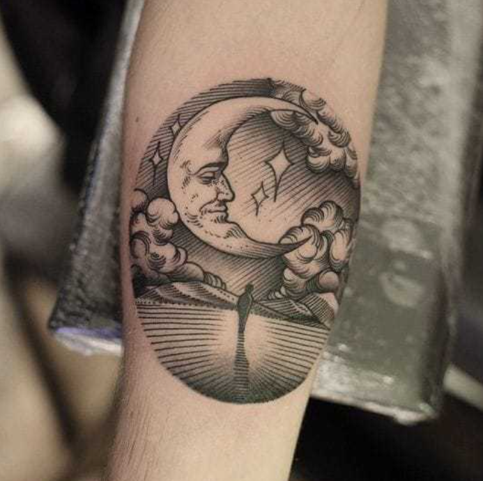
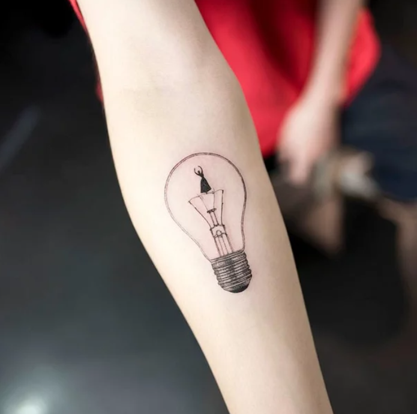
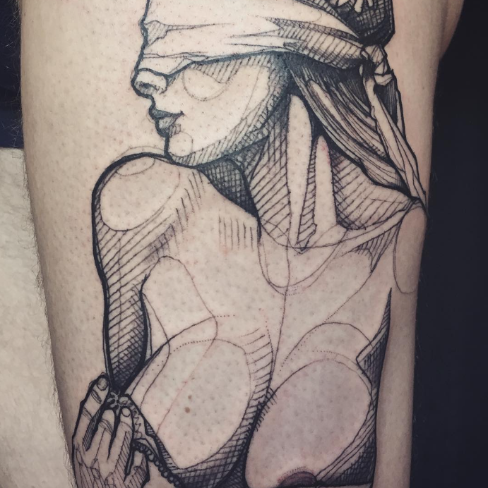

Графика в татуировке отличается использованием резких контрастов и насыщенных черных линий. Этот стиль часто включает элементы, похожие на гравюры и силуэты, и может изображать как абстрактные узоры, так и детализированные сцены.

Минимализм в татуировке сосредоточен на простоте и чистоте форм. Основой могут служить тонкие линии и небольшое количество деталей. Этот стиль часто предпочитают те, кто ценит элегантные и ненавязчивые дизайны.

Скетч стайл имитирует рисунки карандашом или чернилами, создавая ощущение незаконченности. Линии могут быть намеренно небрежными, а композиции — динамичными и живыми, будто они только что перенесены с эскиза на кожу.